приют для собак четыре лапы
Возьми друга домой
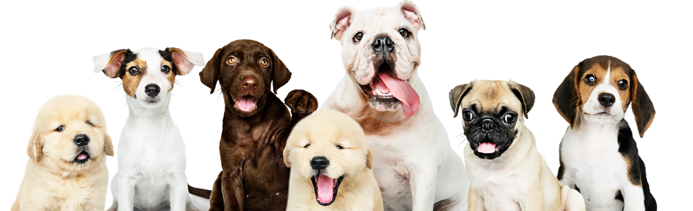
Помогаем людям и питомцам из приютов встретиться и стать друзьями на всю жизнь
Миссия проекта - формирование культуры ответственного отношения к домашним животным. Решение взять кошку или собаку из приюта должно быть осознанным, именно поэтому мы помогаем потенциальным владельцам не только найти питомца, но и подготовиться к жизни с новым другом.
наши питомцы
Джек-рассел-терьер
Майло
2 года | Мальчик
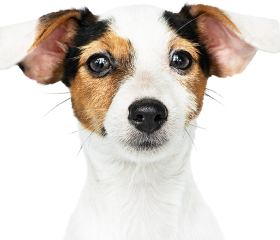
Лабрадор
Герта
4 года | Девочка
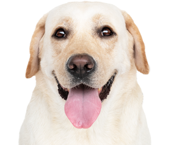
Лабрадор
Мартин
1,5 года | Мальчик
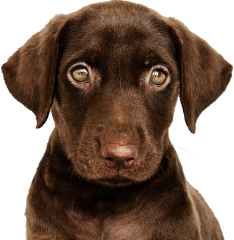
Мопс
Чарли
1 год | Мальчик
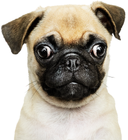
Бигль
Линда
1 год | Девочка
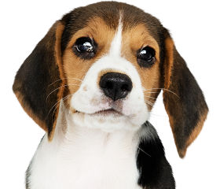
Джек-рассел-терьер
Зельда
0,5 года | Девочка
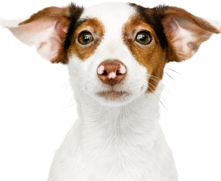
Золотистый ретривер
Пончо
0,5 года | Мальчик
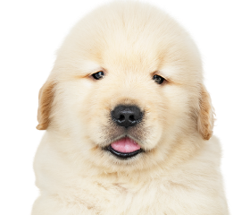
Бульдог
Дензел
6 лет | Мальчик
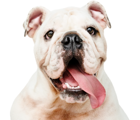
Как забрать питомца домой?
1
Выберите питомца
В нашем приюте содержится более 60 собак
2
Оставьте заявку
Через сайт или связавшись с нами любым удобным для вас способом
3
Пройдите собеседование
Мы заботимся о наших питомцах и отдаем их только в хорошие руки
4
Познакомьтесь с собакой
Приезжайте к нам в приют, чтобы в живую увидеть вашего питомца
5
Забирайте друга домой
Мы поможем вам с транспортировкой
взять питомца
полезные советы
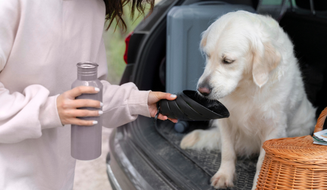
Как уберечь собаку от жары?
Выгуливайте питомца только рано утром и поздно вечером. Если щенок еще не приучился ходить в туалет на улице, используйте дома пеленки. Не выгуливайте собаку в жестком наморднике, а если такая необходимость есть, используйте нейлоновый. Если вы кормите собаку готовыми кормами, можно перейти на облегченные или сократить объем порции. Важно, чтобы пес имел возможность полежать и отдышаться в прохладном месте. Некоторые собаки, чтобы охладиться в жару, готовы лезть в ванну с водой или бассейны для собак.
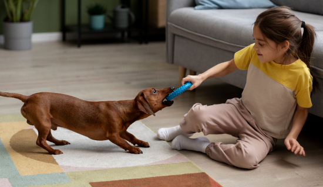
Как отучить щенка грызть все
подряд в доме?
У вашего питомца должно быть достаточно разных игрушек: это могут быть мячики, кольца из жесткой резины, куски каната, еще что-нибудь. Если ваш питомец начал грызть мебель, примените специальные спреи. Они сделаны на основе синтетического перца, безопасны для людей и зверей, но на вкус точно не понравятся хвостатому хулигану. Возьмите за правило убирать в недоступное для щенка место все предметы, которые могут привлечь его внимание и стать для него "игрушками".
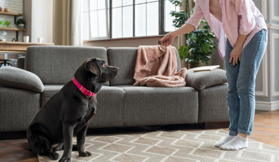
Собака не слушается. Что делать?
Наказания должны присутствовать при обучении и воспитании, но использовать их надо правильно. Питомец должен быть наказан, если он того заслужил, но только в момент совершения "преступления" или же сразу после него. Приучайте выполнять задания с первой команды. Если пес делает вид, что не слышит команды - сразу наказывайте. Дозируйте ласку. Нельзя чрезмерно баловать и жалеть собаку при неправильном поведении. Ласка должна быть наградой за правильное и хорошее поведение. Если вы сами начали обучение питомца и поняли, что не справляетесь, обратитесь к профессионалам.